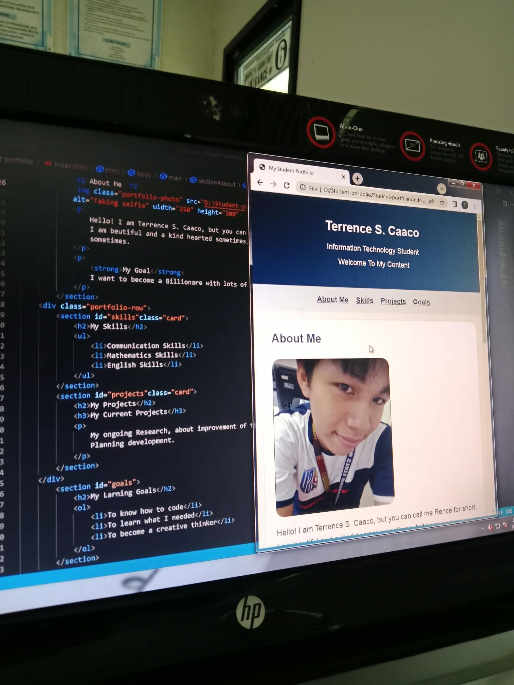
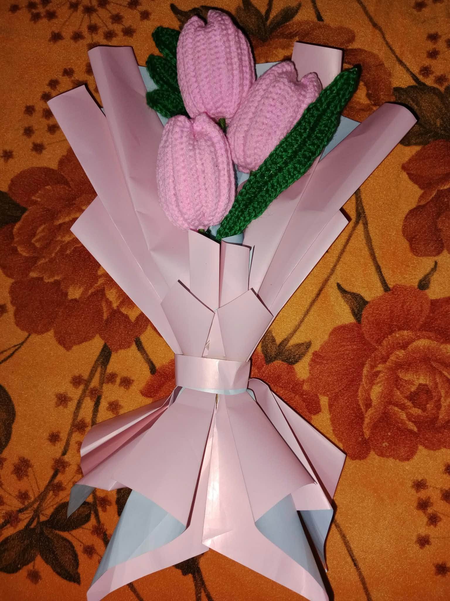
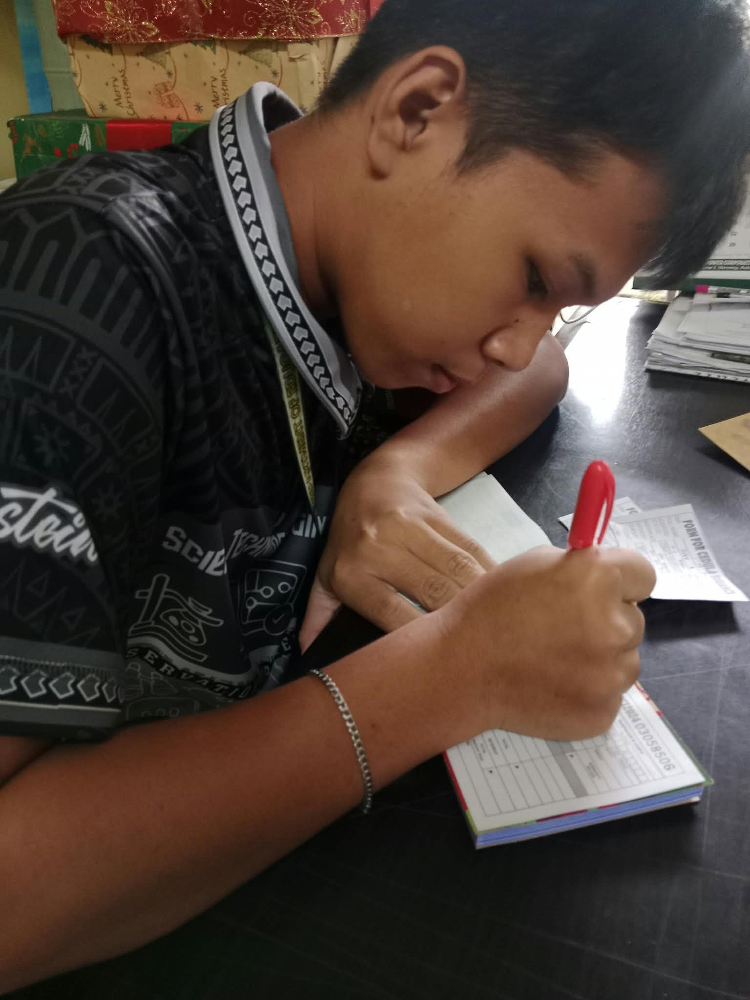
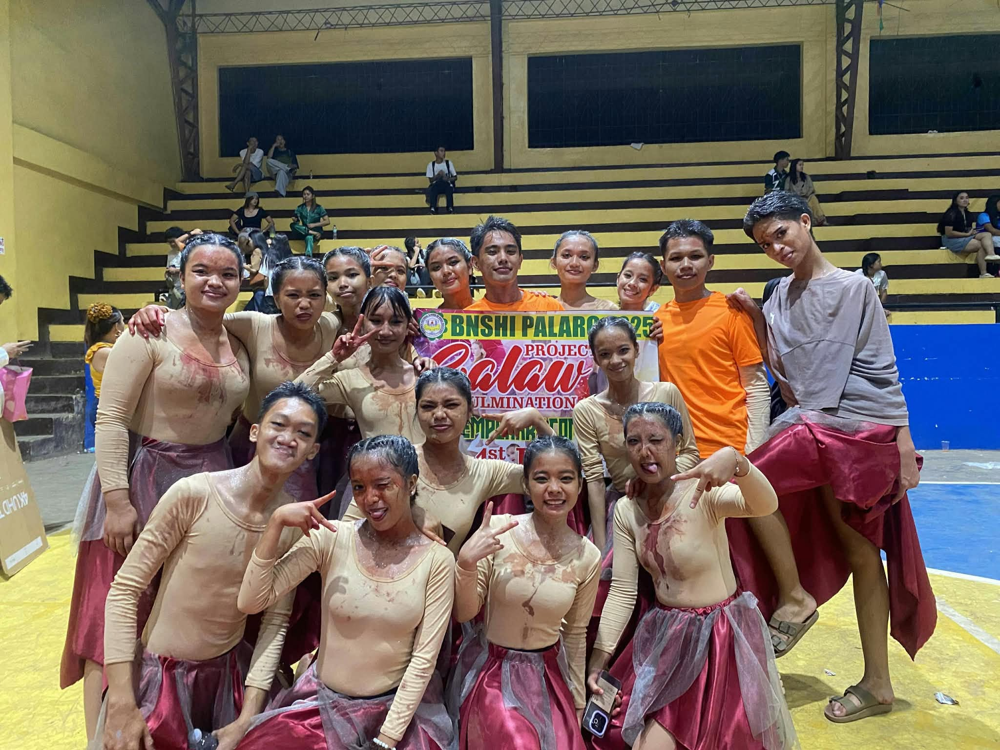
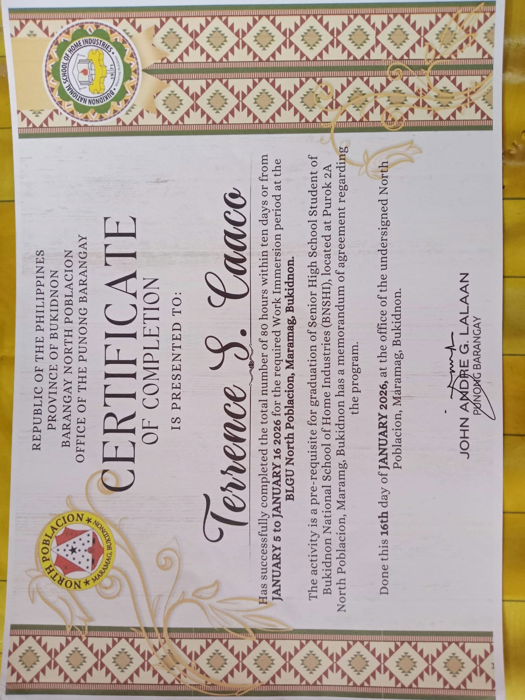
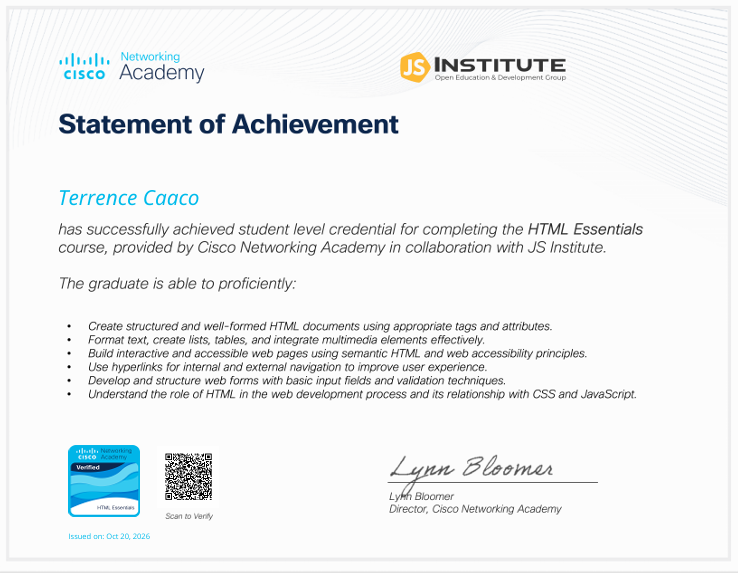
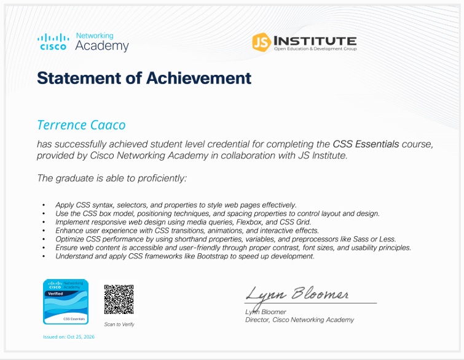
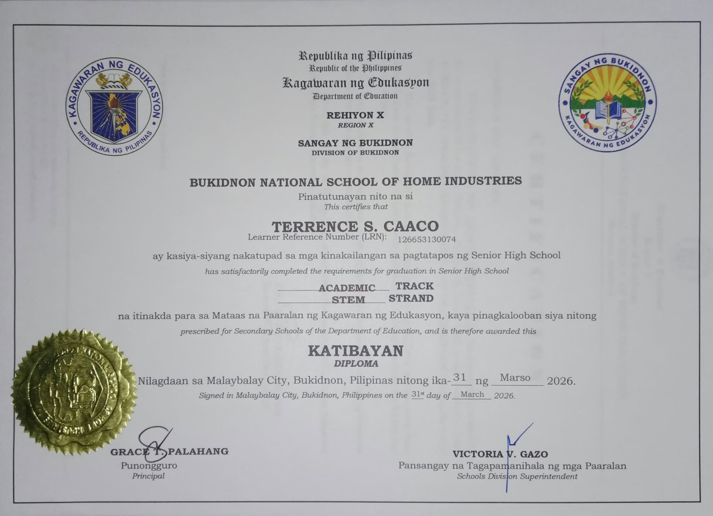

Hello! I'm Terrence S. Caaco, a Bachelor of Science in Information Technology student. I am someone who is eager to learn new things, improve my skills, and explore the world of technology. I enjoy discovering how websites and applications work, especially in web design and development. Although I am still learning, I always try my best to improve my knowledge and gain new experiences. My goal is to become a skilled IT professional who can create useful and meaningful digital solutions in the future.
The skills I acquired throughout my academic journey.
A skill that can communicate properly to others.

A skill I learn throughout being an IT student.

Skill of creating something like boquet, cloths, etc..
A skill to edit something like fliers or infographics.

My underdevelop skill like calligraphy.
Here are some of my achievements and recognitions throughout my academic journey.
Recognition for outstanding academic performance.

Awarded for being the best of all the best group.

Recognition for completing an immersion work activity.

Certificate of completing the HTML essential course.

Certificate of completing the CSS essential course.
Mr. Etherial Sunshine Award during the stemazing prom.

A certificate proving that you graduated and finished the K12.
Feel free to reach out to me, just choose any platform you want to reach me.
Gmail: caacoterrence0711@gmail.com
Phone: 0936-594-6346
Facebook: Rence Caaco
Instagram: @Bartu_loy
TikTok: @RenceRayl